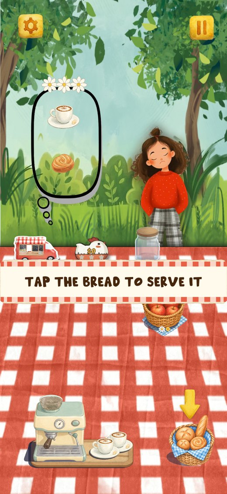
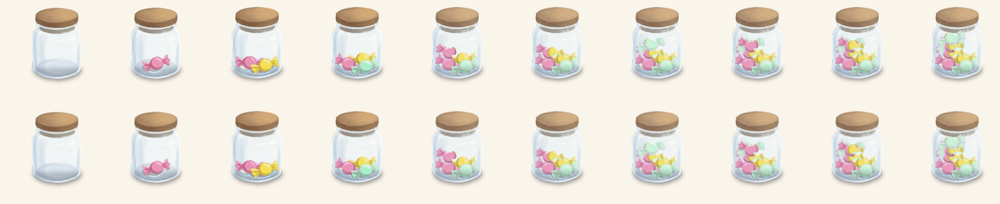
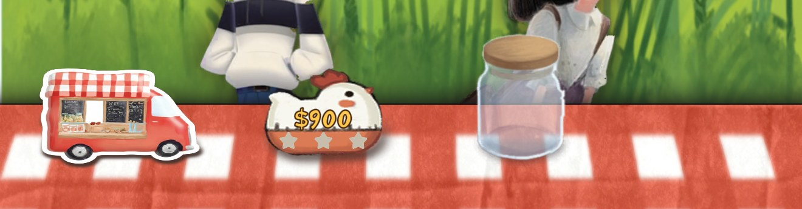

Food Truck Cafe
Your report for 9 November. Version 26.10.26 has been live on the App Store since 27 October.


1Next
You
Look over the seven round 1 fixes under Current. Say build (or tick it there) when you want build 23.
Me
All seven are on main. I read the data again later tonight for your build 22 session. Next: the star shop once Q1 is answered; ChatGPT's apple shadow pass after 1 PM.
2Q&A
Q1 · Star shop: what does it sell? 10 November
MVP 2 needs your list. The stars a day earns (1 to 3) already count on the map; I can add a star total and spend it in the Stars tab. Tick what the first star items should be, or write them.
Q2 · Which device data is yours? 10 November
The development data (TestFlight and editor) since 8 November holds only my two editors; your build 22 session has not arrived there yet. The production data (store copies) has one new player since 9 November: id e048d9, iOS, version 26.10.26, Saturday 8 November 20:46 to 21:14 PST, three days started and finished. If that was you on the new iPhone, it stays out of the store numbers.
3Current
Round 1, your play test, 9 November. Your seven points and what each became, all on main; no build until you say so. Your device id: not settled yet, see Q2 (my first reading was wrong: the "day 15" id was my own editor).
- Tutorial customer. Both tutorials (day 1 and the chapter 2 first day) now always bring the girl.
- Coffee machine. The bean container was never empty: its renderer drew the beans at half strength (alpha 0.5 in the scene), and the 9 November fill was a dark mass on top of that, so it read as empty at phone size. The renderer is at full strength now and the beans are new heaps, lighter, with drawn beans, six fill levels. The pour: the painted stream ended on the cup's far rim; it is redrawn from the same spout tip curving down into the cup's mouth, in the four frames that pour. All frames of both brew clips are below.
- Brewing with an empty container. The code refuses a brew at zero beans and a brew always eats one; what you saw was the full container looking empty (point 2). If it happens again, tell me the day and what the container showed.
- Candy jar. The ten frames had a stair-stepped edge and jagged lines; each is anti-aliased now (drawn at four times the size and brought back), nothing redrawn.
- Bottoms on one line. How I measure: the pink line is the flower pot's lowest painted row; each cyan tick is that item's lowest painted row, counted from its sprite (transparent rows under the drawing left out); yellow is the sprite rectangle's bottom. Two faults found: the empty-row counts were 4 to 7 pixels off for every sprite, and the snap ran before the screen scaler had sized the truck button, which left the truck a fifth of its height too low. Now the counts are measured and the snap runs after the first frame and again half a second later. The truck's bottom still breathes about five pixels with its wobble animation.
- Shop tabs. The tabs are tied to the panel's position every frame, so they slide in with it and are never on screen before it.
- Balance. Two more customers every day; each day two beats longer so they fit; star lines raised from 30 / 55 / 80 % of a perfect day to 40 / 65 / 88 %. Full table below; say the word if you want a day changed.






| Day | Customers | Seconds | Stars before | Stars now |
|---|---|---|---|---|
| 1 | 7 → 9 | 40 → 48 | 70 / 110 / 150 | 100 / 160 / 210 |
| 2 | 7 → 9 | 40 → 48 | 120 / 190 / 260 | 170 / 270 / 370 |
| 3 | 8 → 10 | 45 → 53 | 160 / 260 / 370 | 230 / 380 / 510 |
| 4 | 8 → 10 | 45 → 53 | 190 / 310 / 430 | 270 / 440 / 590 |
| 5 | 9 → 11 | 50 → 58 | 270 / 440 / 620 | 380 / 620 / 830 |
| 6 | 10 → 12 | 55 → 63 | 330 / 540 / 770 | 460 / 750 / 1020 |
| 7 | 10 → 12 | 55 → 63 | 350 / 560 / 790 | 470 / 770 / 1040 |
| 8 | 10 → 12 | 55 → 63 | 350 / 560 / 790 | 470 / 770 / 1040 |
| 9 | 11 → 13 | 65 → 73 | 350 / 560 / 790 | 470 / 760 / 1030 |
| 10 | 11 → 13 | 65 → 73 | 350 / 560 / 790 | 470 / 760 / 1030 |
| 11 | 11 → 13 | 65 → 73 | 350 / 560 / 790 | 470 / 760 / 1030 |
| 12 | 12 → 14 | 70 → 78 | 350 / 570 / 800 | 470 / 760 / 1030 |
| 13 | 12 → 14 | 70 → 80 | 310 / 570 / 830 | 480 / 790 / 1070 |
| 14 | 13 → 15 | 75 → 85 | 330 / 610 / 880 | 510 / 830 / 1120 |
| 15 | 13 → 15 | 75 → 85 | 330 / 610 / 880 | 510 / 830 / 1120 |
| 16 | 14 → 16 | 80 → 90 | 330 / 610 / 880 | 500 / 820 / 1110 |
| 17 | 14 → 16 | 85 → 95 | 510 / 940 / 1370 | 780 / 1270 / 1720 |
| 18 | 15 → 17 | 88 → 98 | 520 / 950 / 1380 | 780 / 1270 / 1720 |
| 19 | 15 → 17 | 91 → 101 | 570 / 1040 / 1510 | 860 / 1390 / 1880 |
| 20 | 16 → 18 | 94 → 104 | 570 / 1040 / 1510 | 850 / 1380 / 1870 |
| 21 | 16 → 18 | 97 → 107 | 610 / 1120 / 1620 | 910 / 1480 / 2000 |
| 22 | 17 → 19 | 100 → 110 | 640 / 1170 / 1700 | 950 / 1540 / 2090 |
| 23 | 17 → 19 | 103 → 113 | 640 / 1170 / 1700 | 950 / 1540 / 2090 |
| 24 | 18 → 20 | 106 → 116 | 640 / 1170 / 1700 | 940 / 1530 / 2080 |
| 25 | 14 → 16 | 109 → 119 | 640 / 1170 / 1700 | 970 / 1580 / 2140 |
| 26 | 15 → 17 | 112 → 122 | 640 / 1170 / 1700 | 960 / 1570 / 2120 |
| 27 | 15 → 17 | 115 → 125 | 680 / 1250 / 1820 | 1030 / 1680 / 2270 |
| 28 | 16 → 18 | 118 → 128 | 750 / 1370 / 1990 | 1120 / 1820 / 2460 |
| 29 | 16 → 18 | 121 → 131 | 780 / 1430 / 2080 | 1170 / 1900 / 2570 |
| 30 | 17 → 19 | 124 → 134 | 800 / 1470 / 2140 | 1200 / 1940 / 2630 |
| 31 | 17 → 19 | 127 → 137 | 800 / 1470 / 2140 | 1200 / 1940 / 2630 |
| 32 | 18 → 20 | 130 → 140 | 800 / 1470 / 2140 | 1190 / 1930 / 2620 |
4MVP
Your words, 9 November. Release goal: Thursday 13 November.
- A couple of things to improve gameplay. Your picks (Q3): d night lights (lit truck windows and fireflies in chapter 1, a lantern glow in chapter 2) and e the shop NEW tag and the bought item flying to the table.
- Stars as a currency, and a star shop panel in the shop. Tabs on the shop panel: left Stars, middle Coins (default, the existing items), right $ (real money, Remove Ads).
- Remove Ads purchase, $1.99 (the Paid Apps Agreement first).
- At least five rounds of your own play test on TestFlight, feedback after each.
5Backlog
Do in the polish release. Unticked items go when you say clean up.
6Analysis, 2 to 8 November
Read 9 November, 10:00 PST. Days are UTC. Players and ads from Unity. App Store Connect is signed out, so Apple's downloads, impressions and page views wait for your sign-in.
| Day | New players | Finished the tutorial | Days finished | Ad requests | Ads shown | Ad revenue |
|---|---|---|---|---|---|---|
| Sun 2 | 0 | 0 | 0 | 0 | 0 | $0 |
| Mon 3 | 2 | 1 | 0 | 6 | 1 | $0.02 |
| Tue 4 | 0 | 0 | 0 | 0 | 0 | $0 |
| Wed 5 | 0 | 0 | 0 | 0 | 0 | $0 |
| Thu 6 | 1 | 0 | 0 | 1 | 0 | $0 |
| Fri 7 | 3 | 0 | 0 | 7 | 2 | $0.02 |
| Sat 8 | 0 | 0 | 0 | 0 | 0 | $0 |
| Week | 6 | 1 | 0 | 14 | 3 | $0.05 |
| Week before, 26 Oct to 1 Nov | 9 | 6 | 21 | 88 | 23 | $0.08 |